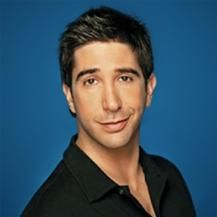

Ross Geller
Paleontólogo, dono de três divórcios e pai de dois filhos, Ross Geller é o romântico em Friends. Logo nos primeiros episódios ele aparenta ser o membro mais maduro do grupo por algumas razões: sua carreira está estabelecida, ele não tem um colega de quarto e é o único que já foi casado. Porém, em uma análise mais detalhada, é possível perceber que Ross é atormentado por um grande número de problemas que circulam abaixo da sua fachada aparentemente estável.
